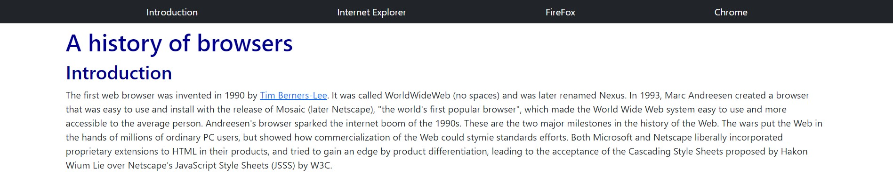
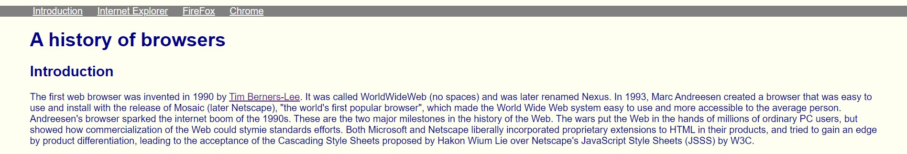

Frameworks Are A Blessing
06 Oct 2022

Before this course I never had the chance to use HTML and CSS. Quickly I learned that even though making a website is hard, designing it to how you want is even harder. The good and bad thing about coding is it will work exactly how you type it. In HTML and CSS you need to change the margins, padding, size, spacing, and more, but, when you apply a framework you can write a lot less code for a much better result. I can sit here and be frustrated with trying to make a bar with internal links or simply create a nav bar in bootstrap.
It Can’t Be That Bad Right?
Let us take a look at two examples one with bootstrap and one without. Now before you take a look I do want to say I am no web developer wizard. Someone with more experience probably could make a non-bootstrap version nicer and simpler. But the biggest point is being someone with only 1-2 weeks of web development and being able to create a much nicer and more practical using a framework shows how helpful it can be.

Index.html
<nav class="navbar navbar-expand-sm navbar-dark fixed-top bg-dark">
<div class="container-fluid d-flex justify-content-evenly">
<a class="nav-link" href="#Intro-header">Introduction</a>
<a class="nav-link" href="#IE-header">Internet Explorer</a>
<a class="nav-link" href="#FireFox-header">FireFox</a>
<a class="nav-link" href="#Chrome-header">Chrome</a>
</div>
</nav>
<div class="container">
<h1 class="pt-5">A history of browsers</h1>
<h2 id="Intro-header">Introduction</h2>
<p>
The first web browser was invented in 1990 by <a href="https://en.wikipedia.org/wiki/Tim_Berners-Lee">Tim Berners-Lee</a>. It was called WorldWideWeb (no spaces) and was later renamed Nexus. In 1993, Marc Andreesen created a browser that was easy to use and install with the release of Mosaic (later Netscape), "the world's first popular browser", which made the World Wide Web system easy to use and more accessible to the average person. Andreesen's browser sparked the internet boom of the 1990s. These are the two major milestones in the history of the Web.
The wars put the Web in the hands of millions of ordinary PC users, but showed how commercialization of the Web could stymie standards efforts. Both Microsoft and Netscape liberally incorporated proprietary extensions to HTML in their products, and tried to gain an edge by product differentiation, leading to the acceptance of the Cascading Style Sheets proposed by Hakon Wium Lie over Netscape's JavaScript Style Sheets (JSSS) by W3C.
</p>

Index.html
<div class="navreplacebar">
<a class="tablecontent" href="#Intro-header">Introduction</a>
<a class="tablecontent" href="#IE-header">Internet Explorer</a>
<a class="tablecontent" href="#FireFox-header">FireFox</a>
<a class="tablecontent" href="#Chrome-header">Chrome</a>
</div>
<h1>A history of browsers</h1>
<h2 id="Intro-header">
Introduction
</h2>
<p>
The first web browser was invented in 1990 by <a href="https://en.wikipedia.org/wiki/Tim_Berners-Lee">Tim Berners-Lee</a>. It was called WorldWideWeb (no spaces) and was later renamed Nexus. In 1993, Marc Andreesen created a browser that was easy to use and install with the release of Mosaic (later Netscape), "the world's first popular browser", which made the World Wide Web system easy to use and more accessible to the average person. Andreesen's browser sparked the internet boom of the 1990s. These are the two major milestones in the history of the Web.
The wars put the Web in the hands of millions of ordinary PC users, but showed how commercialization of the Web could stymie standards efforts. Both Microsoft and Netscape liberally incorporated proprietary extensions to HTML in their products, and tried to gain an edge by product differentiation, leading to the acceptance of the Cascading Style Sheets proposed by Hakon Wium Lie over Netscape's JavaScript Style Sheets (JSSS) by W3C.
</p>
Style.css
.navreplacebar {
background-color: gray;
margin-left: -50px;
margin-right: -50px;
text-align: center;
}
.tablecontent {
text-align: center;
color: white;
padding: 50px 10px 50px 10px;
}
Bottom line is why would someone want to work harder for an equal result. Frameworks allow you to do more faster and majority of the time nicer as well. As a software engineer if you spend most of your time trying to do things the hard way you’ll just end up having wasted time. Throughout my school years I have always been told to work smarter not harder. To me using frameworks is just working smarter, you get to do more with less time.